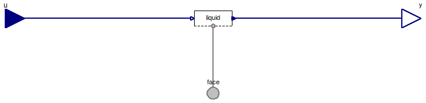

Table of Contents
- User's Guide
- Blocks
- Conditions
- Assemblies
- Regions
- Subregions
- Phases
- Species
- Connectors
- Characteristics
- Units
- Quantities
- Utilities
- Icons
Download
- Latest version (**Empty; please check back soon or contact kdavies4 at gmail.com.)

| Name | Description |
|---|---|
| Conditions for a FaceBus connector, with flows specified by default | |
| Conditions for a FaceBus connector, with flows specified by default and only the fluid phases included | |
| Conditions for a FaceBus connector, with flows specified by default and only the graphite phase | |
| Conditions for a FaceBus connector, with efforts specified by default | |
| Conditions for a FaceBus connector |
 FCSys.Conditions.ByConnector.FaceBus.Single.FaceBusFlows
FCSys.Conditions.ByConnector.FaceBus.Single.FaceBusFlows

| Type | Name | Default | Description |
|---|---|---|---|
| Phases (click to edit) | |||
| Gas | gas | Gas | |
| Graphite | graphite | Graphite | |
| Ionomer | ionomer | Ionomer | |
| Liquid | liquid | Liquid | |
| Type | Name | Description |
|---|---|---|
| FaceBus | face | Connector for material, momentum, and energy of multiple species |
| RealInputBus | u | Bus of inputs to specify conditions |
| RealOutputBus | y | Output bus of measurements |
model FaceBusFlows "Conditions for a FaceBus connector, with flows specified by default" extends FCSys.Icons.Conditions.SingleShort; Phases.Gas gas "Gas"; Phases.Graphite graphite "Graphite"; Phases.Ionomer ionomer "Ionomer"; Phases.Liquid liquid "Liquid"; Connectors.FaceBus face "Connector for material, momentum, and energy of multiple species"; Connectors.RealInputBus u "Bus of inputs to specify conditions"; Connectors.RealOutputBus y "Output bus of measurements"; equation // Gas connect(gas.face, face.gas); connect(u.gas, gas.u); connect(gas.y, y.gas); // Graphite connect(graphite.face, face.graphite); connect(u.graphite, graphite.u); connect(graphite.y, y.graphite); // Ionomer connect(ionomer.face, face.ionomer); connect(u.ionomer, ionomer.u); connect(ionomer.y, y.ionomer); // Liquid connect(liquid.face, face.liquid); connect(u.liquid, liquid.u); connect(liquid.y, y.liquid); end FaceBusFlows;
FCSys.Conditions.ByConnector.FaceBus.Single.FaceBusFluidOnly
| Type | Name | Default | Description |
|---|---|---|---|
| Phases (click to edit) | |||
| Gas | gas | Gas | |
| Liquid | liquid | Liquid | |
| Type | Name | Description |
|---|---|---|
| FaceBus | face | Connector for material, momentum, and energy of multiple species |
| RealInputBus | u | Bus of inputs to specify conditions |
| RealOutputBus | y | Output bus of measurements |
model FaceBusFluidOnly "Conditions for a FaceBus connector, with flows specified by default and only the fluid phases included" extends FCSys.Icons.Conditions.SingleShort; Phases.Gas gas "Gas"; Phases.Liquid liquid "Liquid"; Connectors.FaceBus face "Connector for material, momentum, and energy of multiple species"; Connectors.RealInputBus u "Bus of inputs to specify conditions"; Connectors.RealOutputBus y "Output bus of measurements"; equation // Gas connect(gas.face, face.gas); connect(u.gas, gas.u); connect(gas.y, y.gas); // Liquid connect(liquid.face, face.liquid); connect(u.liquid, liquid.u); connect(liquid.y, y.liquid); end FaceBusFluidOnly;
FCSys.Conditions.ByConnector.FaceBus.Single.FaceBusGraphiteOnly
| Type | Name | Default | Description |
|---|---|---|---|
| Phases (click to edit) | |||
| Graphite | graphite | Graphite | |
| Type | Name | Description |
|---|---|---|
| FaceBus | face | Connector for material, momentum, and energy of multiple species |
| RealInputBus | u | Bus of inputs to specify conditions |
| RealOutputBus | y | Output bus of measurements |
model FaceBusGraphiteOnly "Conditions for a FaceBus connector, with flows specified by default and only the graphite phase" extends FCSys.Icons.Conditions.SingleShort; Phases.Graphite graphite "Graphite"; Connectors.FaceBus face "Connector for material, momentum, and energy of multiple species"; Connectors.RealInputBus u "Bus of inputs to specify conditions"; Connectors.RealOutputBus y "Output bus of measurements"; equation // Graphite connect(graphite.face, face.graphite); connect(u.graphite, graphite.u); connect(graphite.y, y.graphite); end FaceBusGraphiteOnly;
FCSys.Conditions.ByConnector.FaceBus.Single.FaceBusEfforts
| Type | Name | Description |
|---|---|---|
| FaceBus | face | Connector for material, momentum, and energy of multiple species |
| RealInputBus | u | Bus of inputs to specify conditions |
| RealOutputBus | y | Output bus of measurements |
model FaceBusEfforts "Conditions for a FaceBus connector, with efforts specified by default" extends FaceBusFlows( gas( H2( redeclare replaceable function materialSpec = Conditions.ByConnector.Face.Single.Material.density, redeclare replaceable function normalSpec = Conditions.ByConnector.Face.Single.Translational.velocity, redeclare replaceable function followingSpec = Conditions.ByConnector.Face.Single.Translational.velocity, redeclare replaceable function precedingSpec = Conditions.ByConnector.Face.Single.Translational.velocity, redeclare replaceable function thermalSpec = Conditions.ByConnector.Face.Single.Thermal.temperature, redeclare replaceable function materialMeas = Conditions.ByConnector.Face.Single.Material.current, redeclare replaceable function normalMeas = Conditions.ByConnector.Face.Single.Translational.force, redeclare replaceable function followingMeas = Conditions.ByConnector.Face.Single.Translational.force, redeclare replaceable function precedingMeas = Conditions.ByConnector.Face.Single.Translational.force, redeclare replaceable function thermalMeas = Conditions.ByConnector.Face.Single.Thermal.heatRate, redeclare Modelica.Blocks.Sources.RealExpression materialSet(y=4*U.C/U.cc), redeclare Modelica.Blocks.Sources.RealExpression thermalSet(y=300*U.K)), H2O( redeclare replaceable function materialSpec = Conditions.ByConnector.Face.Single.Material.density, redeclare replaceable function normalSpec = Conditions.ByConnector.Face.Single.Translational.velocity, redeclare replaceable function followingSpec = Conditions.ByConnector.Face.Single.Translational.velocity, redeclare replaceable function precedingSpec = Conditions.ByConnector.Face.Single.Translational.velocity, redeclare replaceable function thermalSpec = Conditions.ByConnector.Face.Single.Thermal.temperature, redeclare replaceable function materialMeas = Conditions.ByConnector.Face.Single.Material.current, redeclare replaceable function normalMeas = Conditions.ByConnector.Face.Single.Translational.force, redeclare replaceable function followingMeas = Conditions.ByConnector.Face.Single.Translational.force, redeclare replaceable function precedingMeas = Conditions.ByConnector.Face.Single.Translational.force, redeclare replaceable function thermalMeas = Conditions.ByConnector.Face.Single.Thermal.heatRate, redeclare Modelica.Blocks.Sources.RealExpression materialSet(y=4*U.C/U.cc), redeclare Modelica.Blocks.Sources.RealExpression thermalSet(y=300*U.K)), N2( redeclare replaceable function materialSpec = Conditions.ByConnector.Face.Single.Material.density, redeclare replaceable function normalSpec = Conditions.ByConnector.Face.Single.Translational.velocity, redeclare replaceable function followingSpec = Conditions.ByConnector.Face.Single.Translational.velocity, redeclare replaceable function precedingSpec = Conditions.ByConnector.Face.Single.Translational.velocity, redeclare replaceable function thermalSpec = Conditions.ByConnector.Face.Single.Thermal.temperature, redeclare replaceable function materialMeas = Conditions.ByConnector.Face.Single.Material.current, redeclare replaceable function normalMeas = Conditions.ByConnector.Face.Single.Translational.force, redeclare replaceable function followingMeas = Conditions.ByConnector.Face.Single.Translational.force, redeclare replaceable function precedingMeas = Conditions.ByConnector.Face.Single.Translational.force, redeclare replaceable function thermalMeas = Conditions.ByConnector.Face.Single.Thermal.heatRate, redeclare Modelica.Blocks.Sources.RealExpression materialSet(y=4*U.C/U.cc), redeclare Modelica.Blocks.Sources.RealExpression thermalSet(y=300*U.K)), O2( redeclare replaceable function materialSpec = Conditions.ByConnector.Face.Single.Material.density, redeclare replaceable function normalSpec = Conditions.ByConnector.Face.Single.Translational.velocity, redeclare replaceable function followingSpec = Conditions.ByConnector.Face.Single.Translational.velocity, redeclare replaceable function precedingSpec = Conditions.ByConnector.Face.Single.Translational.velocity, redeclare replaceable function thermalSpec = Conditions.ByConnector.Face.Single.Thermal.temperature, redeclare replaceable function materialMeas = Conditions.ByConnector.Face.Single.Material.current, redeclare replaceable function normalMeas = Conditions.ByConnector.Face.Single.Translational.force, redeclare replaceable function followingMeas = Conditions.ByConnector.Face.Single.Translational.force, redeclare replaceable function precedingMeas = Conditions.ByConnector.Face.Single.Translational.force, redeclare replaceable function thermalMeas = Conditions.ByConnector.Face.Single.Thermal.heatRate, redeclare Modelica.Blocks.Sources.RealExpression materialSet(y=4*U.C/U.cc), redeclare Modelica.Blocks.Sources.RealExpression thermalSet(y=300*U.K))), graphite('C+'( redeclare replaceable function materialSpec = Conditions.ByConnector.Face.Single.Material.density, redeclare replaceable function normalSpec = Conditions.ByConnector.Face.Single.Translational.velocity, redeclare replaceable function followingSpec = Conditions.ByConnector.Face.Single.Translational.velocity, redeclare replaceable function precedingSpec = Conditions.ByConnector.Face.Single.Translational.velocity, redeclare replaceable function thermalSpec = Conditions.ByConnector.Face.Single.Thermal.temperature, redeclare replaceable function materialMeas = Conditions.ByConnector.Face.Single.Material.current, redeclare replaceable function normalMeas = Conditions.ByConnector.Face.Single.Translational.force, redeclare replaceable function followingMeas = Conditions.ByConnector.Face.Single.Translational.force, redeclare replaceable function precedingMeas = Conditions.ByConnector.Face.Single.Translational.force, redeclare replaceable function thermalMeas = Conditions.ByConnector.Face.Single.Thermal.heatRate, redeclare Modelica.Blocks.Sources.RealExpression materialSet(y=4*U.C/U.cc), redeclare Modelica.Blocks.Sources.RealExpression thermalSet(y=300*U.K)), 'e-'( redeclare replaceable function materialSpec = Conditions.ByConnector.Face.Single.Material.density, redeclare replaceable function normalSpec = Conditions.ByConnector.Face.Single.Translational.velocity, redeclare replaceable function followingSpec = Conditions.ByConnector.Face.Single.Translational.velocity, redeclare replaceable function precedingSpec = Conditions.ByConnector.Face.Single.Translational.velocity, redeclare replaceable function thermalSpec = Conditions.ByConnector.Face.Single.Thermal.temperature, redeclare replaceable function materialMeas = Conditions.ByConnector.Face.Single.Material.current, redeclare replaceable function normalMeas = Conditions.ByConnector.Face.Single.Translational.force, redeclare replaceable function followingMeas = Conditions.ByConnector.Face.Single.Translational.force, redeclare replaceable function precedingMeas = Conditions.ByConnector.Face.Single.Translational.force, redeclare replaceable function thermalMeas = Conditions.ByConnector.Face.Single.Thermal.heatRate, redeclare Modelica.Blocks.Sources.RealExpression materialSet(y=4*U.C/U.cc), redeclare Modelica.Blocks.Sources.RealExpression thermalSet(y=300*U.K))), ionomer( 'SO3-'( redeclare replaceable function materialSpec = Conditions.ByConnector.Face.Single.Material.density, redeclare replaceable function normalSpec = Conditions.ByConnector.Face.Single.Translational.velocity, redeclare replaceable function followingSpec = Conditions.ByConnector.Face.Single.Translational.velocity, redeclare replaceable function precedingSpec = Conditions.ByConnector.Face.Single.Translational.velocity, redeclare replaceable function thermalSpec = Conditions.ByConnector.Face.Single.Thermal.temperature, redeclare replaceable function materialMeas = Conditions.ByConnector.Face.Single.Material.current, redeclare replaceable function normalMeas = Conditions.ByConnector.Face.Single.Translational.force, redeclare replaceable function followingMeas = Conditions.ByConnector.Face.Single.Translational.force, redeclare replaceable function precedingMeas = Conditions.ByConnector.Face.Single.Translational.force, redeclare replaceable function thermalMeas = Conditions.ByConnector.Face.Single.Thermal.heatRate, redeclare Modelica.Blocks.Sources.RealExpression materialSet(y=4*U.C/U.cc), redeclare Modelica.Blocks.Sources.RealExpression thermalSet(y=300*U.K)), 'H+'( redeclare replaceable function materialSpec = Conditions.ByConnector.Face.Single.Material.density, redeclare replaceable function normalSpec = Conditions.ByConnector.Face.Single.Translational.velocity, redeclare replaceable function followingSpec = Conditions.ByConnector.Face.Single.Translational.velocity, redeclare replaceable function precedingSpec = Conditions.ByConnector.Face.Single.Translational.velocity, redeclare replaceable function thermalSpec = Conditions.ByConnector.Face.Single.Thermal.temperature, redeclare replaceable function materialMeas = Conditions.ByConnector.Face.Single.Material.current, redeclare replaceable function normalMeas = Conditions.ByConnector.Face.Single.Translational.force, redeclare replaceable function followingMeas = Conditions.ByConnector.Face.Single.Translational.force, redeclare replaceable function precedingMeas = Conditions.ByConnector.Face.Single.Translational.force, redeclare replaceable function thermalMeas = Conditions.ByConnector.Face.Single.Thermal.heatRate, redeclare Modelica.Blocks.Sources.RealExpression materialSet(y=4*U.C/U.cc), redeclare Modelica.Blocks.Sources.RealExpression thermalSet(y=300*U.K)), H2O( redeclare replaceable function materialSpec = Conditions.ByConnector.Face.Single.Material.density, redeclare replaceable function normalSpec = Conditions.ByConnector.Face.Single.Translational.velocity, redeclare replaceable function followingSpec = Conditions.ByConnector.Face.Single.Translational.velocity, redeclare replaceable function precedingSpec = Conditions.ByConnector.Face.Single.Translational.velocity, redeclare replaceable function thermalSpec = Conditions.ByConnector.Face.Single.Thermal.temperature, redeclare replaceable function materialMeas = Conditions.ByConnector.Face.Single.Material.current, redeclare replaceable function normalMeas = Conditions.ByConnector.Face.Single.Translational.force, redeclare replaceable function followingMeas = Conditions.ByConnector.Face.Single.Translational.force, redeclare replaceable function precedingMeas = Conditions.ByConnector.Face.Single.Translational.force, redeclare replaceable function thermalMeas = Conditions.ByConnector.Face.Single.Thermal.heatRate, redeclare Modelica.Blocks.Sources.RealExpression materialSet(y=4*U.C/U.cc), redeclare Modelica.Blocks.Sources.RealExpression thermalSet(y=300*U.K))), liquid(H2O( redeclare replaceable function materialSpec = Conditions.ByConnector.Face.Single.Material.density, redeclare replaceable function normalSpec = Conditions.ByConnector.Face.Single.Translational.velocity, redeclare replaceable function followingSpec = Conditions.ByConnector.Face.Single.Translational.velocity, redeclare replaceable function precedingSpec = Conditions.ByConnector.Face.Single.Translational.velocity, redeclare replaceable function thermalSpec = Conditions.ByConnector.Face.Single.Thermal.temperature, redeclare replaceable function materialMeas = Conditions.ByConnector.Face.Single.Material.current, redeclare replaceable function normalMeas = Conditions.ByConnector.Face.Single.Translational.force, redeclare replaceable function followingMeas = Conditions.ByConnector.Face.Single.Translational.force, redeclare replaceable function precedingMeas = Conditions.ByConnector.Face.Single.Translational.force, redeclare replaceable function thermalMeas = Conditions.ByConnector.Face.Single.Thermal.heatRate, redeclare Modelica.Blocks.Sources.RealExpression materialSet(y=4*U.C/U.cc), redeclare Modelica.Blocks.Sources.RealExpression thermalSet(y=300*U.K)))); // The daltonSource and thermalSet blocks are redeclared as not replaceable // because y is set directly and cannot be undone at instantiation. // See note in ElectrochemEfforts. end FaceBusEfforts;